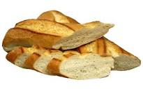

French Bread Recipe

Recipe Details
This tasty French Bread recipe is easy on time and energy! Whether
you want an easy to follow, or are looking for a delicious
bread recipe, this is the perfect recipe for you. The
ingredients needed are inexpensive and easy to get ahold of.
The cookware involved should also be relatively easy to get
ahold of. Good luck and enjoy!
Overview
- Cook: 40 mins
- Total: 2 hr 40 min
- Additional: 1 hr 35 min
- Prep: 2 hr 40 min
- Servings: 30
- Yield 1 2 large loaves
Ingredients
- 6 cups all-purpose flour
- 2 ½ (.25 ounce) packages active dry yeast
- ½ teaspoons salt
- 2 cups warm water (110 degrees F/45 degrees C)
- 1 tablespoon cornmeal
- 1 egg white
- 1 tablespoon water
Instructions
- In a large bowl, combine 2 cups flour, yeast and salt.
Stir in 2 cups warm water, and beat until well blended
using a stand mixer with a dough hook attachment. Using a
wooden spoon, stir in as much of the remaining flour as you can.
- POn a lightly floured surface, knead in enough flour to make
a stiff dough that is smooth and elastic. Knead for about 8 to
10 minutes total. Shape into a ball. Place dough in a
greased bowl, and turn once. Cover, and let rise in a warm
place until doubled.
- Punch dough down, and divide in half. Turn out onto a lightly
floured surface. Cover, and let rest for 10 minutes. Roll each
half into large rectangle. Roll up, starting from a long side.
Moisten edge with water and seal. Taper ends.
- Grease a large baking sheet. Sprinkle with cornmeal. Place loaves,
seam side down, on the prepared baking sheet. Lightly beat the
egg white with 1 tablespoon of water, and brush on. Cover with a
damp cloth. Let rise until nearly doubled, 35 to 40 minutes.
- ith a very sharp knife, make 3 or 4 diagonal cuts about 1/4 inch
deep across top of each loaf. Bake in a preheated 375 degrees F
(190 degrees C) oven for 20 minutes. Brush again with egg white
mixture. Bake for an additional 15 to 20 minutes, or until bread
tests done. If necessary, cover loosely with foil to prevent over
browning. Remove from baking sheet, and cool on a wire rack.
Nutrition Facts
Per Serving: 94 calories; protein 2.9g; carbohydrates
19.5g; fat 0.3g; sodium 119.4mg.